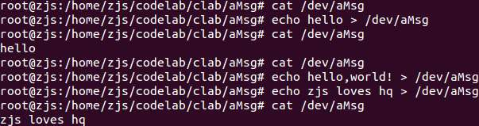
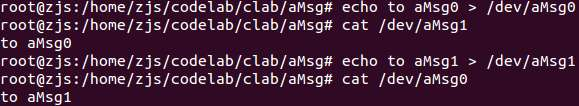
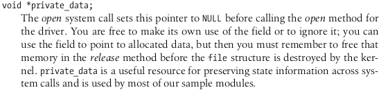
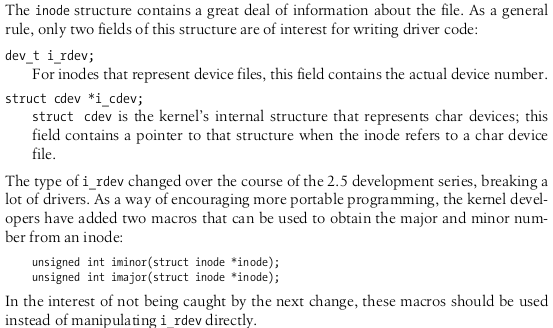
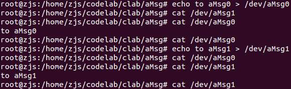

从大二开始就一直想学Linux驱动开发，可是当时自己基础薄弱，不仅不太懂Linux，而且也没有什么实际的嵌入式硬件可以让我练手，为此我卧薪尝胆，依次学习了8051单片机、Arduino、STM32等MCU，又接触了uCOS、FreeRTOS等嵌入式操作系统，还学习了I2C、SPI、UART等外设常用的通信协议，更是接触了各种各样的传感器。现在终于有了足够的硬件基础以进入Linux驱动程序的开发了，充满了期待。一旦能够把各种嵌入式外设加入到Linux系统中，那么我的嵌入式也算成功入门了～
然而，这个第一个驱动程序Demo与硬件没有任何关系，我用它来熟悉Linux驱动程序的基本结构。这个驱动叫做aMsg，意思就是a message。它的功能非常简单——应用程序可以写入一个字符串，aMsg持有最近一次写入它的一个字符串，供应用程序读取。
每一个Linux设备驱动都需要有一个主设备号，不同的设备驱动就是通过主设备号区分的（虽然最新的Linux内核不要求每个驱动的主设备号不同，但是习惯上还是尽量不重复）。主设备号的分配有两种，一种是静态分配，另一种是动态分配。静态分配就是开发者自己指定一个数字作为主设备号，动态分配就是由系统分配一个空闲的主设备号。虽然静态分配有诸多弊端，但是其简单性很适合入门～所以aMsg的主设备号是我随便指定的常数——我的学号224。
关于读写策略，可以有很多种，为了演示各种读写策略，我将编写多个版本。
=================阶段一：全局aMsg================
这个版本的aMsg中保存的字符串是全局的，也就是所有应用程序都会访问同一个缓冲区。为了简单起见，存放字符串的缓冲区是静态分配的，最大容量是1024字节。
aMsg只需要实现2个对外方法：read和write。
所以代码就是这样的：
aMsg.c：
#include <linux/module.h>
#include <linux/init.h>
#include <linux/fs.h>
#include <asm/uaccess.h>
MODULE_LICENSE("Dual BSD/GPL");
//主设备号
#define AMSG_MAJOR 224
//缓冲区大小
#define AMSG_MAX_BUF_SZ 1024
//当前字符串长度
static int g_length=0;
//缓冲区
static char g_buffer[AMSG_MAX_BUF_SZ];
//read操作
static ssize_t amsg_read(struct file* p_file,char* p_buf,size_t p_count,loff_t* p_offset)
{
//最多能够读取的字节数（p_count和g_length之间较小者）
int t_size=(p_count<g_length?p_count:g_length);
//没有成功拷贝的字节数
int t_rest=copy_to_user(p_buf,g_buffer,t_size);
//不管结果如何，都清空缓冲区
g_length=0;
//返回成功拷贝的字节数
return t_size-t_rest;
}
//write操作
static ssize_t amsg_write(struct file* p_file,const char* p_buf,size_t p_count,loff_t* p_offset)
{
//最多能够写入的字节数（p_count和sizeof(g_buffer)之间较小者）
int t_size=(p_count<sizeof(g_buffer)?p_count:sizeof(g_buffer));
//没有成功拷贝的字节数
int t_rest=copy_from_user(g_buffer,p_buf,t_size);
//成功拷贝的字节数，也就是字符串的长度
g_length=t_size-t_rest;
//返回成功拷贝的字节数
return g_length;
}
//填充file_operations结构体
static struct file_operations amsg_fops=
{
.owner=THIS_MODULE,
.read=amsg_read,
.write=amsg_write
};
//模块初始化代码
static int amsg_init_module(void)
{
//注册字符设备（这是Old way）
int t_ret=register_chrdev(AMSG_MAJOR,"aMsg",&amsg_fops);
//注册失败的处理
if(t_ret<0)
{
printk("Unable to register\n");
return t_ret;
}
return 0;
}
//模块清理代码
static void amsg_cleanup_module(void)
{
//注销字符设备
unregister_chrdev(AMSG_MAJOR,"aMsg");
printk("clean up!");
}
module_init(amsg_init_module);
module_exit(amsg_cleanup_module);
从代码中可以看出，模块使用了register_chrdev()函数来注册字符设备。该方式是一种Old way，虽然Linux支持，但可能将来会丢弃该函数。不过这种方法确实方便、容易理解，所以这里先将就着用。
read()的实现可以看出，不管读取多少字节，都会清空缓冲区。
编译代码用的Makefile（注意，一定得是“Makefile”，不能是“makefile”或者其他）内容如下：
obj-m := aMsg.o KERNEL_DIR := /lib/modules/$(shell uname -r)/build PWD := $(shell pwd) all: make -C $(KERNEL_DIR) SUBDIRS=$(PWD) modules clean: rm *.o *.ko *.mod.c .PHONY:clean
使用命令make之后，目录下产生aMsg.ko。接下来，以root身份执行
insmod aMsg.ko mknod /dev/aMsg c 224 0
就能够加载驱动程序，并在/dev目录下创建aMsg设备文件。mknod命令中的224就是主设备号。
接着如图测试，可以证实：1、/dev/aMsg中的内容读了就没了；2、/dev/aMsg中的内容会被最新的内容覆盖。这两点都与代码逻辑一致。

接下来我们可以做这么一个实验：
rm /dev/aMsg mknod /dev/aMsg0 c 224 0 mknod /dev/aMsg1 c 224 1

可以看到，/dev/aMsg0和/dev/aMsg1访问的是同一个缓冲区，而不会根据次设备号的不同而加以区分。所以，这里的“全局”就是“驱动程序相关的”。
===================阶段二：设备相关aMsg===============
之前那个aMsg中保存的字符串是全局的，而这个版本的aMsg中的字符串则是与特定的设备相关的。换句话说，当创建了两个aMsg的设备文件（比如一个aMsg0，次设备号是0，一个是aMsg1，次设备号是1），那么aMsg0和aMsg1的缓冲区是相互独立的，但所有访问aMsg0的应用程序都是访问的同一个缓冲区0，所有访问aMsg1的应用程序也都是访问同一个缓冲区1。这样更加符合实际情况。
从上面的代码中可以看出，要实现不同的读写策略，需要能够区分不同的调用来源，找到对应的数据进行操作。观察read()、write()的函数原型，
ssize_t read(struct file* p_file,char* p_buf,size_t p_count,loff_t* p_offset); ssize_t write(struct file* p_file,const char* p_buf,size_t p_count,loff_t* p_offset);
要想区分不同的调用来源，只能从struct file结构体下手，好在Linux的struct file结构体考虑到了这个问题，为我们预留了一个private_data字段。它是一个指针，用来存放我们自定义的数据。《Linux device driver》中的介绍如下：

这个例子中，private_data应该指向一个由缓冲区和长度构成的结构体，以表示待操作的字符串缓冲区。而private_data在何时初始化呢？答案就是open()。open()的原型为：
int open(struct inode* p_inode,struct file* p_file);
其中struct inode中包含了很多与文件有关的信息。在驱动开发中，通常只需要使用两个字段，分别是
dev_t i_rdev; struct cdev *i_cdev;
其中dev_t就是一个由主设备号与次设备号构成的32位整数，而cdev结构体中也包好了一个dev_t的字段。但是呢，inode结构体比较多变，可以见《Linux device driver》中的描述：

所以，我们就使用
unsigned int imajor(struct inode *inode); unsigned int iminor(struct inode *inode);
来获取主次设备号。
代码如下：
aMsg.c：
#include <linux/module.h>
#include <linux/init.h>
#include <linux/fs.h>
#include <asm/uaccess.h>
#include <linux/slab.h>
MODULE_LICENSE("Dual BSD/GPL");
//主设备号
#define AMSG_MAJOR 224
//缓冲区大小
#define AMSG_MAX_BUF_SZ 1024
//最大分配记录数
#define AMSG_MAX_RECORDS 16
//消息结构体
struct message
{
//当前字符串长度
int length;
//缓冲区
char buffer[AMSG_MAX_BUF_SZ];
};
//分配记录
struct alloc_record
{
//次设备号
int minor;
//消息
struct message* msg;
};
//所有已分配的记录缓冲区
static struct alloc_record g_records[AMSG_MAX_RECORDS];
//所有已分配记录的个数
static int g_record_count=0;
//open操作
static int amsg_open(struct inode* p_inode,struct file* p_file)
{
//获取次设备号
int t_minor=iminor(p_inode);
//对应的分配记录
struct alloc_record* t_record=NULL;
//遍历所有已有的分配记录
int t_i;
for(t_i=0;t_i<g_record_count;t_i++)
{
//之前存在该次设备号的分配记录
if(g_records[t_i].minor==t_minor)
{
t_record=&g_records[t_i];
break;
}
}
//如果不存在该次设备号的分配记录，则需要分配
if(t_record==NULL)
{
//如果分配条数已经达到上限，则返回错误
if(g_record_count>=AMSG_MAX_RECORDS)
return ENOSPC;
//分配一条记录
t_record=&g_records[g_record_count];
g_record_count++;
//初始化记录的次设备号
t_record->minor=t_minor;
//初始化记录的消息
t_record->msg=kmalloc(sizeof(struct message),GFP_KERNEL);
t_record->msg->length=0;
}
//把private_data指向对应的消息
p_file->private_data=t_record->msg;
return 0;
}
//read操作
static ssize_t amsg_read(struct file* p_file,char* p_buf,size_t p_count,loff_t* p_offset)
{
//获取对应的消息结构体
struct message* t_msg=p_file->private_data;
//最多能够读取的字节数（p_count和t_msg->length之间较小者）
int t_size=(p_count<t_msg->length?p_count:t_msg->length);
//没有成功拷贝的字节数
int t_rest=copy_to_user(p_buf,t_msg->buffer,t_size);
//不管结果如何，都清空缓冲区
t_msg->length=0;
//返回成功拷贝的字节数
return t_size-t_rest;
}
//write操作
static ssize_t amsg_write(struct file* p_file,const char* p_buf,size_t p_count,loff_t* p_offset)
{
//获取对应的消息结构体
struct message* t_msg=p_file->private_data;
//最多能够写入的字节数（p_count和sizeof(g_buffer)之间较小者）
int t_size=(p_count<AMSG_MAX_BUF_SZ?p_count:AMSG_MAX_BUF_SZ);
//没有成功拷贝的字节数
int t_rest=copy_from_user(t_msg->buffer,p_buf,t_size);
//成功拷贝的字节数，也就是字符串的长度
t_msg->length=t_size-t_rest;
//返回成功拷贝的字节数
return t_msg->length;
}
//填充file_operations结构体
static struct file_operations amsg_fops=
{
.owner=THIS_MODULE,
.open=amsg_open,
.read=amsg_read,
.write=amsg_write
};
//模块初始化代码
static int amsg_init_module(void)
{
//注册字符设备（这是Old way）
int t_ret=register_chrdev(AMSG_MAJOR,"aMsg",&amsg_fops);
//注册失败的处理
if(t_ret<0)
{
printk("Unable to register\n");
return t_ret;
}
return 0;
}
//模块清理代码
static void amsg_cleanup_module(void)
{
//注销字符设备（这是Old way）
unregister_chrdev(AMSG_MAJOR,"aMsg");
printk("clean up!");
}
module_init(amsg_init_module);
module_exit(amsg_cleanup_module);
make之后产生aMsg.ko，以root身份执行：
rmmod aMsg insmod aMsg.ko mknod /dev/aMsg0 c 224 0 mknod /dev/aMsg1 c 224 1
以重新加载驱动。
然后如图进行测试：

可见，aMsg0和aMsg1相互独立，互不影响。
至此已经基本了解了不同读写策略需要怎么实现了。我还将不断学习更多的关于驱动程序的知识~